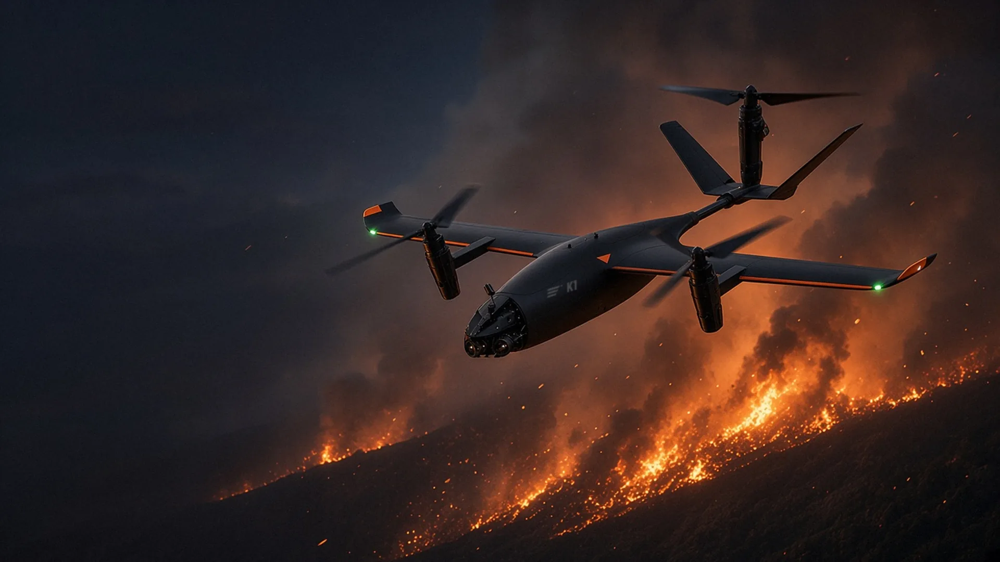

01 –
Missing person search
Supporting searches across remote terrain and urban environments where time and visibility are limited.
Black Water Industries is developing technology for eight defined mission profiles spanning search and rescue, disaster response, incident investigation and public safety.
Our approach brings N.O.L.A.N.™ virtual AI and Kannon™ autonomous assets into a connected operational environment, allowing mission commanders to coordinate air, ground and maritime resources through a shared system.
The eight profiles show where we intend to put that technology to work, including operations where access is restricted, information is incomplete or several agencies must work together.


01 –
Supporting searches across remote terrain and urban environments where time and visibility are limited.
02 –
Assisting operations involving open water, ice, surf and flooding, where access can change rapidly.
03 –
Supporting response teams dealing with wildfires, severe weather, floods and mudslides.
04 –
Helping teams assess dangerous environments during urban search and rescue operations.
05 –
Supporting incident investigation, scene reconstruction and the coordination of resources.
06 –
Providing public safety support and coordinated scene command during complex incidents.
07 –
Supporting crash searches and debris-field mapping across difficult terrain.
08 –
Assisting response operations where dangerous substances create additional risks for personnel.
Responders need to know what's happening across an incident, particularly when multiple teams and assets are involved. Our proprietary N.O.L.A.N.™ virtual AI and Kannon™ physical AI systems are being developed to work together, connecting mission information and autonomous capabilities under human command.
Black Water welcomes inquiries from U.S. public safety agencies, government program offices and commercial operators interested in our developing technologies.
Black Water Industries is the name Black Water Limited Liability Company does business as. The company was founded in 2026 and is headquartered at 4780 N I-55 Ste 100-1009, Jackson, MS 39211. N.O.L.A.N.™ is the AI backbone being developed to collaborate with the mission team, alongside Kannon™ autonomous assets. The eight profiles on this page are where that work is intended to apply. The systems are still being developed, and a briefing is a conversation, not a license to N.O.L.A.N.™.
Or email info@blackwater-industry.com or call (601) 524-2555.